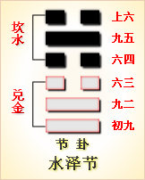

周易第六十卦 节 水泽节 坎上兑下
节：亨。苦节不可贞。
彖曰：节，亨，刚柔分，而刚得中。苦节不可贞，其道穷也。说以行险，当位以节，中正以通。天地节而四时成，节以制度，不伤财，不害民。
象曰：泽上有水，节;君子以制数度，议德行。
初九：不出户庭，无咎。象曰：不出户 庭，知通塞也。
九二：不出门庭，凶。象曰：不出门庭，失时极也。
六三：不节若，则嗟若，无咎。象曰：不节之嗟，又谁咎也。
六四：安节，亨。象曰：安节之亨，承上道也。
九五：甘节，吉;往有尚。象曰：甘节之吉，居位中也。
上六：苦节，贞凶，悔亡。象曰：苦节贞凶，其道穷也。
节卦卦象，水泽节卦的象征意义
节卦，这个卦是异卦相叠，下卦为兑，上卦为坎。兑为泽，坎为水。泽有水而流有限，多必溢于泽外。因此要有节度，故称节。天地有节度才能常新，国家有节度才能安稳，个人有节度才能完美。
节卦位于涣卦之后，《序卦》中这样解释道：“物不可终离，故受之以节。”一直离散、涣散下去，并不适宜，所以接着要谈节卦。节卦与涣卦相反，互为综卦，交相使用。
《象》中这样解释道：泽上有水，节;君子以制数度，议德行。这里指出：泽卦的卦象是兑(泽)下坎(水)上为泽上有水之象，象征以堤防来节制。水在泽中，一旦满了就溢出来，而堤防本身就是用来节制水的盈虚的。君子应当效法节卦的义理，制定典章制度和必要的礼仪法度来作为行事的准则，以此来节制人们的行为。
节卦象征万物有节，告诉人们节制的道理，属于上上卦。《象》中这样来断此卦：时来运转喜气生，登台封神姜太公，到此诸神皆退位，纵然有祸不成凶。
此卦名为节。《说文》中说：“节，竹约也。”也就是说节的本义是竹节。竹节把一根竹子分为数节，使每一节都有一个适中的长度，并且把每节竹子连接起来，所以“节”字的引申义是节制、限制、节俭、衔接、关联的意思。天气的变化使一年形成四季，这四季就是四个节。“节”使每个季节的时间保持适中，既不过长，也不过短，并且把四季按顺序连接起来，我们平时所说的过节，其实指的便是跨过时间上的这个衔接环节的意思。迁移的人们不可能永远处于漂泊状态中，肯定会找到属于自己的乐土。于是在乐土与漂泊之间便有一个过渡的“节”，所以換:卦的后面是节卦。这也就是《序卦传》中所说的：“物不可以终离，故受之以节。”
节卦卦画：节卦的卦画为三个阳爻三个阴爻，其排列顺序与涣卦的卦画正好相反，节卦与涣卦互为覆卦。
节卦卦象：从卦象上进行分析，节卦上卦为坎为水，下卦为兑为泽，泽上有水便是节卦的卦象。水会由高至低不停地流动，可是如果经过一个浅坑，水便会被积蓄而不再往前流了。沼泽比地面要低，所以下雨时或其他河水流经沼泽地时，便会在这里积聚。所以节积水成泽便是节卦的大形象。
关键词：周易,节卦,水泽节,坎上兑下
节卦：亨通。以节制守礼为苦事，吉凶不可占问。
初九：在家室内不出门，没有灾祸。
九二：在庭院内不出门，凶险。
六三：不知节俭守礼，就会后悔叹息。知道就没有灾祸。
六四：安于节制守礼的生活，亨通。
九五：以节制守礼为乐事，吉利。出行会得到帮助。
上六：以节制守礼为苦事，占得凶兆，悔恨不已。
①节是本卦的标题。节的意思是节制、节俭和礼节。全卦的内容讲礼节和节约。标题的“节”字与内容有关，又是卦中的多见词。
②苦节：意 思是以节制为苦事。
③若;句尾的助词，没有实际意义。
④嗟：感 慨，叹息。
⑤安节：意思是安于节俭的生活。
(6)甘节：意思是以节制为乐事。
(7)尚：资助，帮助。